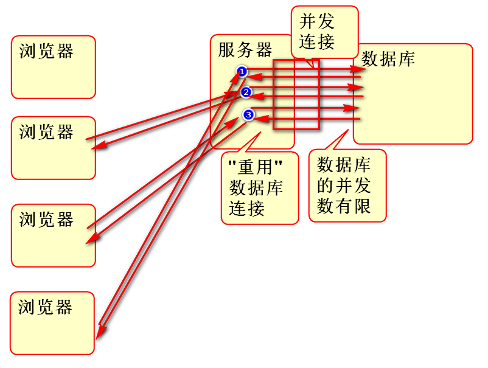

数据库连接池是管理并发访问数据库连接的理想解决方案.
DriverManager管理数据库连接适合单线程情况, 而在多线程并发情况下,为了能够重用数据库连接, 同时控制并发连接总数,保护数据库避免连接过载, 一定要使用数据库连接池.
连接池原理:

数据库连接池的开源实现非常多, DBCP是常用的连接池之一.
导入DBCP pom.xml:
<dependency>
<groupId>commons-dbcp</groupId>
<artifactId>commons-dbcp</artifactId>
<version>1.4</version>
</dependency>
使用DBCP:
案例:
String driver="oracle.jdbc.OracleDriver";
String url="jdbc:oracle:thin:@192.168.201.227:1521:orcl";
String username = "openlab";
String password = "open123";
BasicDataSource ds =
new BasicDataSource();
//设置必须的参数
ds.setDriverClassName(driver);
ds.setUrl(url);
ds.setUsername(username);
ds.setPassword(password);
//设置连接池的管理策略参数
ds.setInitialSize(2);
ds.setMaxActive(100);
//使用连接池中的数据库连接
Connection conn=ds.getConnection();
//执行SQL
String sql = "select 'hello' as a "
+ "from dual";
Statement st=conn.createStatement();
ResultSet rs=st.executeQuery(sql);
while(rs.next()){
String str = rs.getString("a");
System.out.println(str);
}
//归还连接到数据库连接池!!
conn.close();
为了便捷的使用连接池,经常将连接池封装为一个连接管理工具类:
/**
* 连接池版本的 数据库 连接管理工具类
* 适合于并发场合
*/
public class DBUtils {
private static String driver;
private static String url;
private static String username;
private static String password;
private static int initSize;
private static int maxActive;
private static BasicDataSource ds;
static{
ds=new BasicDataSource();
Properties cfg=new Properties();
try{
InputStream in = DBUtils.class
.getClassLoader()
.getResourceAsStream("db.properties");
cfg.load(in);
//初始化参数
driver = cfg.getProperty("jdbc.driver");
url = cfg.getProperty("jdbc.url");
username = cfg.getProperty("jdbc.username");
password = cfg.getProperty("jdbc.password");
initSize = Integer.parseInt(
cfg.getProperty("initSize"));
maxActive = Integer.parseInt(
cfg.getProperty("maxActive"));
in.close();
//初始化连接池
ds.setDriverClassName(driver);
ds.setUrl(url);
ds.setUsername(username);
ds.setPassword(password);
ds.setInitialSize(initSize);
ds.setMaxActive(maxActive);
}catch(Exception e){
e.printStackTrace();
throw new RuntimeException(e);
}
}
public static Connection getConnection(){
try{
//getConnection()从连接池中获取重用
//的连接, 如果连接池满了,则等待.
//如果有连接归还,则获取重用的连接
Connection conn = ds.getConnection();
return conn;
}catch(Exception e){
e.printStackTrace();
throw new RuntimeException(e);
}
}
public static void close(Connection conn){
if(conn!=null){
try {
//将用过的连接归还到连接池
conn.close();
} catch (Exception e) {
e.printStackTrace();
}
}
}
}
其配套参数配置文件 db.properties:
# db.properties
jdbc.driver=oracle.jdbc.OracleDriver
jdbc.url=jdbc:oracle:thin:@192.168.201.227:1521:orcl
jdbc.username=openlab
jdbc.password=open123
# paramter for BasicDataSource
initSize=2
maxActive=2
测试:
public class Demo02 {
public static void main(String[] args) {
Connection conn = null;
try{
conn = DBUtils.getConnection();
String sql="select 'Hello' as a "
+ "from dual";
Statement st = conn.createStatement();
ResultSet rs = st.executeQuery(sql);
while(rs.next()){
String str=rs.getString("a");
System.out.println(str);
}
rs.close();
st.close();
}catch(Exception e){
e.printStackTrace();
}finally{
DBUtils.close(conn);
}
}
}
DBUtils 简化了数据库访问
连接池并发性测试:
测试原理:
测试案例:
/*
* 连接池并发测试
*/
public class Demo03 {
public static void main(String[] args) {
Thread t1 = new DemoTherad(5000);
Thread t2 = new DemoTherad(6000);
Thread t3 = new DemoTherad(1000);
t1.start();
t2.start();
t3.start();
}
}
class DemoTherad extends Thread{
int wait;
public DemoTherad(int wait) {
this.wait=wait;
}
public void run() {
Connection conn = null;
try {
//getConnection方法在连接池中没有
//连接可以使用时候,会阻塞等待
conn=DBUtils.getConnection();
System.out.println("获取了连接:"+conn);
Thread.sleep(wait);
String sql = "select 'Hello' as a "
+ "from dual";
Statement st=conn.createStatement();
ResultSet rs=st.executeQuery(sql);
while(rs.next()){
System.out.println(rs.getString("a"));
}
System.out.println(wait+"结束");
} catch (Exception e) {
e.printStackTrace();
}finally {
DBUtils.close(conn);
}
}
}
PreparedStatement 对象用于执行带参数的预编译执行计划, 其原理是:

关于执行计划:
PreparedStatement 好处是可以重复使用执行计划,提高DB效率
使用步骤
案例:
/**
* 演示预编译的SQL执行计划
*/
public class Demo04 {
public static void main(String[] args) {
Connection conn = null;
try {
conn = DBUtils.getConnection();
//创建带参数的SQL语句.
String sql="insert into robin_demo "
+ "(id, name) values (?,?)";
//将SQL发送到数据库,创建执行计划
//返回值 ps 就代表执行计划
PreparedStatement ps=
conn.prepareStatement(sql);
//替换执行计划中的参数, 2个参数
//按照序号发送参数
ps.setInt(1, 9);
ps.setString(2, "Andy");
//执行"执行计划"
int n=ps.executeUpdate();
System.out.println(n);
//再次重复使用执行计划
ps.setInt(1, 100);
ps.setString(2, "Wang");
n = ps.executeUpdate();
System.out.println(n);
} catch (Exception e) {
e.printStackTrace();
}finally{
DBUtils.close(conn);
}
}
}
案例:
/**
* 使用执行计划执行更新语句
*/
public class Demo05 {
public static void main(String[] args) {
Connection conn = null;
try{
conn = DBUtils.getConnection();
String sql="update robin_demo "
+ "set name=? "
+ "where id=? ";
PreparedStatement ps=
conn.prepareStatement(sql);
ps.setString(1, "Lao Wang");
ps.setInt(2, 100);
int n=ps.executeUpdate();
System.out.println(n);//1
//?
}catch(Exception e){
e.printStackTrace();
}finally{
DBUtils.close(conn);
}
}
}
案例: 带参数的查询功能:
/**
* 利用PS 实现查询功能
*/
public class Demo06 {
public static void main(String[] args) {
Connection conn = null;
try {
conn = DBUtils.getConnection();
String sql="select id, name "
+ "from robin_demo "
+ "where name like ? ";
PreparedStatement ps =
conn.prepareStatement(sql);
ps.setString(1, "%w%");
ResultSet rs=ps.executeQuery();
while(rs.next()){
//getInt(列的序号),利用序号获取值
int id=rs.getInt(1);
String name=rs.getString(2);
System.out.println(id+","+name);
}
} catch (Exception e) {
e.printStackTrace();
} finally {
DBUtils.close(conn);
}
}
}
何为注入攻击:
用户输入了 含有SQL成分的参数, 参数在拼接SQL时候造成SQL语句的语义改变! 进一步改变SQL语句的执行计划! 最终的执行结果就完全变了!!!
如何避免:
原理:

一个注入攻击的例子:
数据准备:
create table robin_user1(
id number(6),
name varchar2(100),
pwd varchar2(100)
);
insert into robin_user1 (id, name, pwd)
values (1, 'tom', '123' );
insert into robin_user1 (id, name, pwd)
values (2, 'jerry', '123' );
案例代码:
public class Demo07 {
public static void main(String[] args) {
//获取用户输入
Scanner in = new Scanner(System.in);
System.out.print("用户名:");
String name=in.nextLine();
System.out.print("密码:");
String pwd = in.nextLine();
//检查登录情况
boolean pass=login(name, pwd);
if(pass){
System.out.println("欢迎你!"+name);
}else{
System.out.println("用户名或者密码错误!");
}
}
//检查用户是否能够登录
public static boolean login(
String name, String pwd){
String sql="select count(*) as c "
+ "from robin_user1 "
+ "where name=\'"+name+"\' "
+ "and pwd=\'"+pwd+"\' ";
System.out.println(sql);
Connection conn=null;
try {
conn = DBUtils.getConnection();
Statement st=conn.createStatement();
ResultSet rs=st.executeQuery(sql);
while(rs.next()){
int n = rs.getInt("c");
return n>=1;
}
} catch (Exception e) {
e.printStackTrace();
}finally{
DBUtils.close(conn);
}
return false;
}
}
测试:
在输入用户名 tom 和密码: 1' or '1'='1 时候出现注入攻击现象
使用 PS 就可以避免注入攻击, 更新login方法如下:
/**
* 利用 PS 就可以避免注入攻击
* @param name
* @param pwd
* @return
*/
public static boolean login(
String name, String pwd){
String sql = "select count(*) as c "
+ "from robin_user1 "
+ "where name=? and pwd=? ";
Connection conn = null;
try {
conn = DBUtils.getConnection();
PreparedStatement ps=
conn.prepareStatement(sql);
ps.setString(1, name);
ps.setString(2, pwd);
ResultSet rs=ps.executeQuery();
while(rs.next()){
int n = rs.getInt("c");
return n>=1;
}
} catch (Exception e) {
e.printStackTrace();
}finally{
DBUtils.close(conn);
}
return false;
}
测试结果不会发生注入攻击
实现课堂全部案例代码